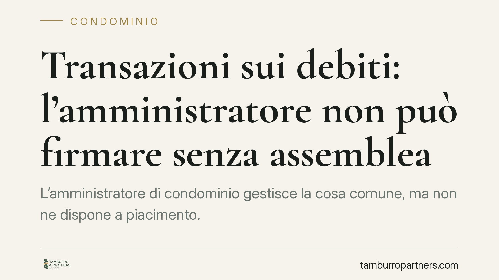

Transazioni sui debiti: l'amministratore non può firmare senza assemblea
L'amministratore di condominio gestisce la cosa comune, ma non ne dispone a piacimento. Firmare una transazione sui debiti senza mandato dell'assemblea eccede i poteri di rappresentanza e può integrare una grave irregolarità, con rischio di revoca giudiziaria. Una recente pronuncia del Tribunale di Palermo torna sul punto, utile a chiarire cosa l'amministratore può fare da solo e cosa no.

Il caso
Un amministratore sottoscrive con alcuni creditori un accordo che ridefinisce i debiti del condominio: dilazioni, stralci, rinunce parziali. Lo fa senza una delibera assembleare che lo autorizzi. I condòmini contestano l'operazione e chiedono la revoca.
Una recente pronuncia del Tribunale di Palermo ha ribadito un principio consolidato: la transazione sui debiti non rientra tra gli atti che l'amministratore può compiere in autonomia. In assenza di mandato specifico dell'assemblea, l'accordo è viziato nei poteri di chi lo firma e la condotta può rilevare ai fini della revoca.
Inquadramento normativo
Il perimetro dei poteri dell'amministratore è fissato dall'art. 1130 c.c. (attribuzioni) e dall'art. 1131 c.c. (rappresentanza). Quest'ultimo stabilisce che l'amministratore rappresenta il condominio nei limiti delle proprie attribuzioni e di quanto la legge o l'assemblea gli affidano. Fuori da quel perimetro, l'atto non impegna automaticamente i condòmini.
Il nodo è questo: perché la transazione eccede l'ordinaria amministrazione? La transazione (art. 1965 c.c.) è un contratto con cui le parti, facendosi reciproche concessioni, pongono fine a una lite o la prevengono. Non si limita a *conservare* il patrimonio comune: lo *dispone*. Rinunciare a parte di un credito, accettare condizioni di pagamento peggiorative, riconoscere un debito contestato sono scelte che incidono sulla sfera patrimoniale dei singoli condòmini. Per questo la giurisprudenza prevalente la colloca tra gli atti dispositivi, non tra quelli gestori ordinari.
Sul piano delle maggioranze, l'orientamento consolidato àncora il quorum all'oggetto e al valore della lite transatta: se la controversia riguarda materie per cui è richiesta una maggioranza qualificata, la transazione su quella stessa materia deve rispettare lo stesso quorum. Non esiste quindi una maggioranza unica per "transigere": va individuata caso per caso in base a ciò su cui si transige.
Anche nella mediazione obbligatoria in materia condominiale (art. 5-ter D.Lgs. 28/2010) l'amministratore può attivare, aderire e partecipare al procedimento previa delibera assembleare; l'accordo che ne deriva, per vincolare il condominio, necessita a sua volta dell'approvazione dell'assemblea con la maggioranza prevista dall'art. 1136 c.c. correlata all'oggetto. È opportuno verificare il testo vigente della norma, ritoccata dalla riforma Cartabia, prima di impostare il procedimento.
Implicazioni pratiche
Per i condòmini. Una transazione firmata senza mandato non è un fatto compiuto da subire. L'operazione può essere contestata e, nei casi più gravi, la condotta dell'amministratore giustifica la revoca per gravi irregolarità (art. 1129 c.c.), che include la mancata o irregolare rappresentanza degli interessi comuni.
Per l'amministratore. Occorre distinguere con nettezza gli atti conservativi urgenti — che l'art. 1130 c.c. consente di compiere anche d'iniziativa — dagli atti dispositivi del patrimonio comune, che richiedono sempre la copertura assembleare. Agire senza mandato espone a responsabilità e indebolisce la posizione dello stesso amministratore davanti ai creditori.
Per i creditori. Un accordo sottoscritto dal solo amministratore privo di autorizzazione è fragile. Chi tratta con il condominio ha interesse a verificare l'esistenza di una delibera che legittimi la transazione: senza, l'intesa rischia di non produrre effetti vincolanti verso i condòmini.
Cosa fare in concreto
- Verificare sempre il mandato assembleare prima di sottoscrivere qualsiasi accordo che incida sui debiti o sui crediti condominiali.
- Individuare la maggioranza corretta in base all'oggetto e al valore della controversia, non applicando un quorum standard.
- Distinguere l'urgenza conservativa dalla disposizione patrimoniale: solo la prima legittima l'iniziativa autonoma dell'amministratore.
- Documentare tutto: convocazione, ordine del giorno specifico, delibera e verbale devono dare conto dei poteri conferiti.
- Richiedere ai creditori la delibera di legittimazione prima di considerare definitivo un accordo transattivo.
In sintesi
L'amministratore è il braccio operativo del condominio, non il suo arbitro. Sui debiti può istruire, trattare e proporre, ma la firma che impegna il patrimonio comune resta nelle mani dell'assemblea. Chi salta questo passaggio rischia la revoca e lascia il condominio esposto ad accordi instabili.
Per la valutazione di una specifica vicenda è opportuno raccogliere la documentazione condominiale e verificare i presupposti dell'operazione con un professionista.
---
Contributo informativo a cura di Tamburro & Partners Avvocati - Avv. Giuseppe Tamburro. Non costituisce parere legale.
Ogni condominio ha una storia a sé.
Se gestisci un'amministrazione e vuoi un confronto su una specifica questione condominiale, scrivi allo studio. Ti rispondiamo entro un giorno lavorativo.